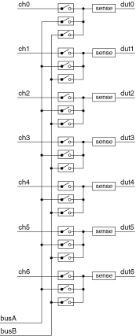
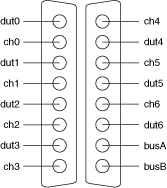

The following figure represents the NI PXI/PXIe-2512 (NI 2512) in the independent topology.

Both the scanning command, dut1->busA;, and the immediate operation, niSwitch Connect Channels VI or the niSwitch_Connect function with parameters dut1 and busA, result in the following connection:
signal connected to DUT1 is routed to busA
The following figure identifies the pins for the NI 2512.
